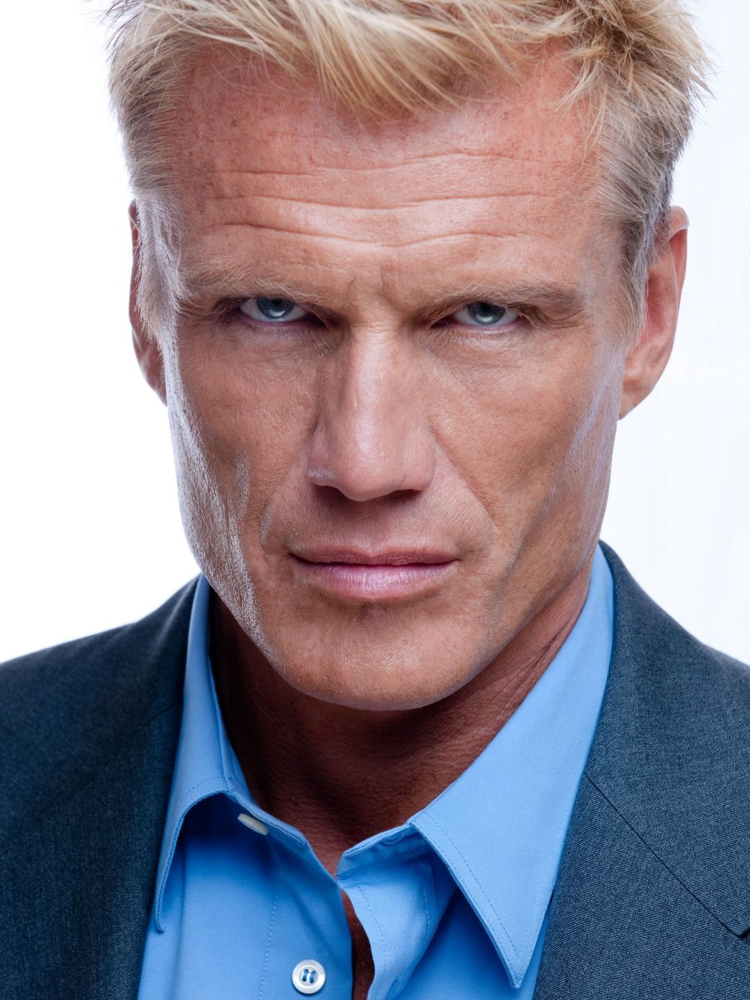
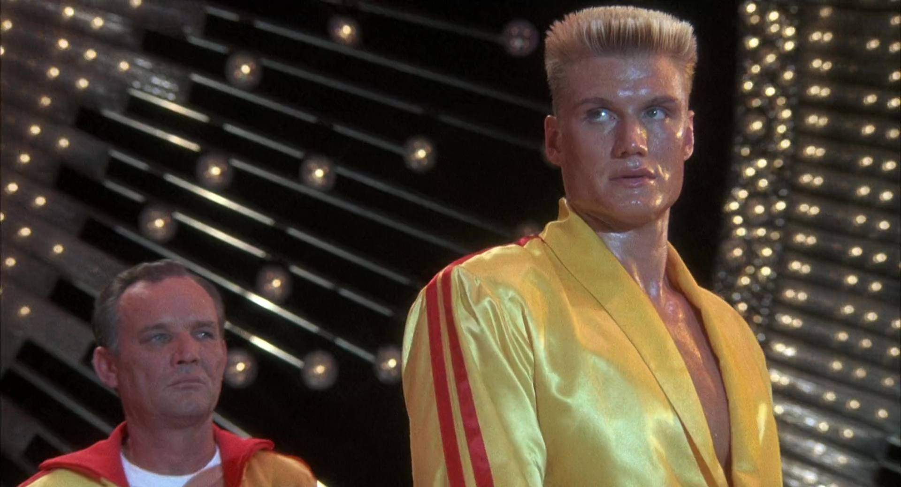
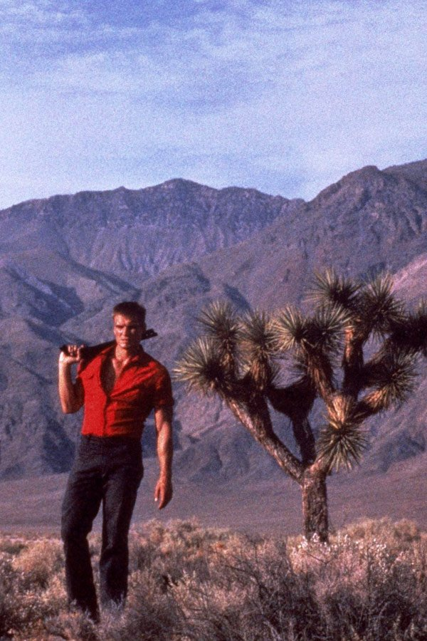

Il y a des acteurs qu'on regarde sans les voir.
Dolph Lundgren est de ceux-là.
Depuis quarante ans, il est là. Dans les salles, dans les bacs vidéo, dans les catalogues de streaming. Toujours présent, rarement célébré. Une carrière de plus de soixante films que la critique a systématiquement expédiée en deux lignes — quand elle a daigné s'y arrêter.
Le problème de Lundgren est simple. Il s'appelle Ivan Drago.
Apparu dans Rocky IV en 1985 comme antagoniste soviétique monolithique — deux mètres, cent kilos, sourire inexistant — il a été immédiatement réduit à une image. La machine. Le colosse. L'ennemi parfait parce qu'il ne ressemble pas à un homme.
Cette image a duré trente ans.
Ce qu'elle a effacé, c'est tout le reste.
Ce soir, SOMEDAY fait le chemin inverse. On prend le temps de regarder ce que quarante ans de carrière ont réellement produit — et ce qu'ils disent sur un homme que le cinéma n'a jamais vraiment pris la peine de comprendre.

Dolph Lundgren
Rocky IV sort en novembre 1985.
Le film est un phénomène culturel — 300 millions de dollars de recettes mondiales, bande originale omniprésente, symbole de la Guerre Froide réduite à un combat de boxe. Stallone d'un côté. Lundgren de l'autre.
Et Lundgren est parfait.
Parfait dans le sens le plus cruel du terme — il incarne si complètement ce que le film demande qu'il disparaît derrière le personnage. Ivan Drago n'est pas un rôle, c'est une silhouette. Une menace abstraite, sans passé, sans nuance, sans humanité visible. Le film n'en a pas besoin. Le public non plus.
Mais Lundgren, lui, en avait besoin.
Parce que cette perfection dans l'inhumain allait le poursuivre pendant une décennie. Les studios ne voyaient pas l'acteur — ils voyaient la silhouette. Trop grand, trop suédois, trop associé à un rôle de méchant soviétique pour devenir un héros américain crédible.
Ce que personne ne voulait voir à l'époque — c'est que derrière Ivan Drago il y avait un homme avec un master en chimie du MIT, une pratique sérieuse du karaté kyokushin, et une intelligence du jeu d'acteur que le rôle de Drago ne lui avait pas permis d'exprimer.
Rocky IV a fait de Lundgren une star.
Et l'a enfermé dans une cage au même moment.

Ivan Drago — Rocky IV, 1985
Face à Hollywood qui ne sait pas quoi faire de lui, Lundgren prend une décision que peu d'acteurs de sa génération auraient eu le courage de prendre.
Il construit son propre territoire.
Pas les grandes salles. Pas les franchises. Pas les rôles secondaires dans des productions qui ne l'intéressent pas. Le marché direct-to-video — qui explose précisément à cette époque — devient son terrain de jeu. Film après film, budget après budget, il crée quelque chose de rare : une filmographie cohérente, identifiable, avec sa propre esthétique et ses propres règles.
The Punisher en 1989 est le premier signal fort. Jamais sorti en salles aux États-Unis, adapté d'un comics Marvel qui renie toute trace de sa source — pas de costume, pas de crâne, juste un homme dans un trench-coat qui élimine la mafia. Le film est sombre, presque un giallo américain. Lundgren y est sobre, concentré, habité par quelque chose que Rocky IV ne lui avait pas laissé exprimer.
Joshua Tree en 1993 confirme ce qu'on commençait à pressentir. Vic Armstrong derrière la caméra, un road movie dans le désert américain, et Lundgren qui porte le film seul — pas comme une machine invincible, mais comme un homme vulnérable, injustement accusé, qui doit trouver en lui des ressources qu'il ne savait pas avoir. C'est une performance sobre, physique, crédible. Pas ce qu'on attendait.
BlackJack en 1998 ferme la boucle. John Woo contraint par un budget de télévision, Lundgren dans le rôle d'un garde du corps phobique — la couleur blanche comme métaphore d'une fragilité qu'il ne peut pas contrôler. Le film est imparfait. La performance ne l'est pas.
Trois films. Trois territoires différents. Trois façons de démontrer la même chose — que Lundgren était capable de bien plus que ce qu'Hollywood lui demandait.
Il a juste fallu chercher ailleurs pour le voir.
Dolph Lundgren est né Hans Lundgren en 1957 à Stockholm.
Il grandit dans une famille difficile — un père violent, une enfance marquée par la discipline comme seule réponse à la violence du monde. Il trouve le karaté à l'adolescence. Pas comme loisir — comme refuge. Comme structure. Comme quelque chose qui lui appartient entièrement.
Il devient champion de karaté kyokushin. L'une des disciplines les plus exigeantes physiquement qui existe — contact total, sans protections, sans concessions. Ce n'est pas du sport de compétition au sens ordinaire. C'est une façon d'être au monde.
Et pendant ce temps, il étudie. Chimie à l'Université Royale de Stockholm, puis à l'École Polytechnique de Sydney, puis au MIT de Boston où il obtient son master. Pas un cursus ordinaire — l'une des formations scientifiques les plus sélectives du monde.
Ce n'est pas le profil qu'on associe à Ivan Drago.
Quand Stallone le remarque pour Rocky IV, Lundgren est en train de terminer son master. Il aurait pu choisir autre chose. Il choisit le cinéma — avec toute la conscience de quelqu'un qui comprend ce qu'il fait.
C'est ce qui rend sa filmographie de série B si intéressante à relire. Lundgren n'est pas tombé dans le direct-to-video par défaut ou par incapacité. Il y a construit quelque chose de délibéré — une présence, une cohérence, une façon d'occuper l'espace à l'écran qui doit autant à son intelligence qu'à sa physicalité.
J'avais découvert Lundgren avec Universal Soldier. Ce qui m'avait frappé, c'était la présence physique — inévitable, impossible à ignorer.
Ce que j'ai compris bien plus tard — c'est que derrière cette présence, il y avait un homme qui avait réfléchi à ce qu'il faisait.
Pas juste un acteur. Un praticien.

Dolph Lundgren — Joshua Tree, 1993
Dolph Lundgren n'a pas eu la carrière qu'il méritait.
Ce n'est pas un jugement — c'est un constat. Une carrière construite dans l'ombre, loin des salles et des critiques, dans un territoire que le cinéma sérieux refusait de regarder.
Mais cette carrière existe. Elle est là, dans les bacs, dans les enregistrements Canal+, dans les armoires de ceux qui savaient regarder ailleurs.
Je pratiquais le karaté quand j'ai découvert Lundgren. Je cherchais des modèles — des hommes qui montraient ce que les arts martiaux pouvaient être à l'écran. Des hommes qui prenaient leur corps au sérieux.
Lundgren en était un.
Pas uniquement parce qu'il était grand et fort. Parce qu'il y avait quelque chose de réel dans sa façon d'occuper l'espace — une discipline, une conscience physique que le cinéma d'action de l'époque ne produisait pas souvent.
SOMEDAY existe pour des carrières comme la sienne. Pour les films qu'on n'a pas vus, les performances qu'on n'a pas célébrées, les acteurs qu'on a réduits à une image sans chercher à savoir ce qu'il y avait derrière.
Derrière Ivan Drago, il y avait Dolph Lundgren.
Champion de karaté kyokushin. Master en chimie du MIT. Acteur qui a construit quarante ans de carrière avec les moyens qu'on lui donnait, dans les territoires qu'on lui laissait.
Ce n'est pas rien.
La saison 1 de SOMEDAY se termine ici.
La cassette est dans le lecteur.
On rembobine.
Regarder l'épisode
SOMEDAY — EP. 12